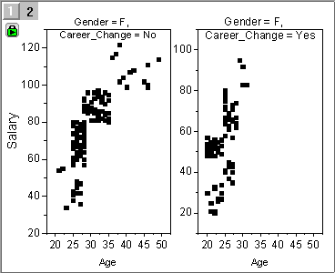
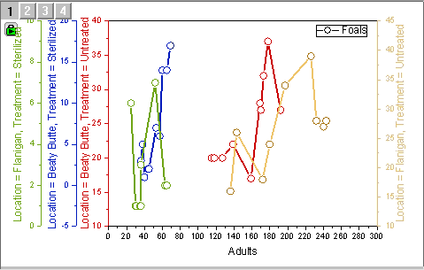

クラスタープロット
クラスタープロット

要求されるデータ
理想的には、少なくとも2つのY列を入力データとして持つ必要があり、そのうちの1つはグループ情報を提供します。必要に応じて、プロットの色/シンボルの形状/シンボルのサイズをマッピングするための列を追加できます。
グラフ作成
plot_bygroupダイアログは次の2つの方法のうちの1つで開きます。
- メニューの作図> カテゴリカル： クラスタープロットを選択
- 2Dグラフギャラリーツールバーの
 ボタンをクリックします。
ボタンをクリックします。

開いたダイアログでは以下の操作ができます。
- 入力データ範囲を選択、1つ以上のグループ列を追加
- プロットタイプを指定
- プロットの色またはシンボルの形状/サイズをマッピングするか指定
- レイヤのリンク方法を決定
- パネルの配置を決定
ダイアログ設定の詳細はこのページを参照してください。
クラスタープロットが生成されたら、グラフ上の緑色の錠前ボタンをクリックして、レイヤを表示/非表示を選んで、グループ要素のフィルタリングができます。
クイックサンプル
サンプル1: クラスタープロット作成
以下のサンプルは、デフォルト設定でインポートされた(Data: インポート: 単一ASCII)<Origin exe folder>/Samples/Statistics/body.datのデータを使用しています。データセットにはグループデータの2列、年齢(col(B)) と 性別(Col(C))が含まれています。性別でパネルを分け、年齢で色分けした身長対体重の散布図を作成します。
- D列を右クリックして、列XY属性の設定: X列を選択してX列に設定します。
- 列DとEを選択して、作図> 2D: グループ化プロット: クラスタープロットを選択します。開いたダイアログで、以下のように設定します。
OKをクリックしてクラスタープロットを作成します。
サンプル2: グループ情報変更時に自動でクラスタープロットを更新
以下のサンプルは、デフォルト設定でインポートされた(ファイル: インポート: 単一ASCII)<Origin フォルダ>/Samples/Statistics/body.datのデータを使用しています。このデータセットには2列のグループデータ、性別(Col(C))と転職(Col(D))があります。これら2つのグループ情報でクラスタープロットを作図します。グループ情報にフィルタをかけると、クラスタープロットは自動で更新されます。
- A、B列を選択して、作図> 2D: グループ化プロット: クラスタープロットを選択します。開いたダイアログで、以下のように設定します。
- グラフタイプ = 散布図
- レイヤを分ける変数 > 水平 = col(C):Gender、垂直 = col(D):Career_Change
- 軸の設定 > Xスケールをそろえるにチェック
- 軸フレームの表示にチェック
OKをクリックしてクラスタープロットを作成します。

- グループ変数にフィルタをかけて年齢に対する収入の分布の変化をダイナミックに表示します。グラフの左上にある緑の鍵のアイコンをクリックしてレイヤの表示/非表示を選択します。
|
|
転職する人々の収入の分布に性別変数がどのように影響するかを見たい場合
|
転職を繰り返すこと女性の給与分布にどのように影響するかを見たい場合
|
| フィルタ条件
|
|
|
| クラスタープロット
|

|

|
Note: ソースワークシートにフィルタを追加できます。フィルタ条件を変更するとそれに対応してクラスタープロットが更新されます。
サンプル3: パネル1つのクラスタープロットを作図
次のサンプルは、ラーニングセンターのTrellis Plots - Overlap Panels with Multiple Categories Combination.opjuにあるデータセットを使用します。複数グループそれぞれにY軸がある、1つのパネルのグラフとしてプロットします。
- ヘルプ: ラーニングセンターを選択します。
- 左側のグラフサンプルタブを選択して、トレリスプロットを選択します。
- Trellis Plots - Overlap Panels with Multiple Categories Combination.opjuをダブルクリックします。ワークブックBook8をアクティブにします。データセットAdults vs. Foalsが、場所(col(F))と治療(col(G))により4つのグループに分けられています。この4グループが重なりあったクラスタープロットを作成します。
- C列を選択して、作図> 2D: グループ化プロット: クラスタープロットを選択します。開いたダイアログで、以下のように設定します。
- グラフタイプ = 線+シンボル
- レイヤを分ける変数 > 水平 = col(F):Location および col(G):Treatmente
- レイヤの整列 = 全レイヤを重ねる
- Y軸タイトルにグループ情報を表示するにチェックします。
- 軸フレームの表示にチェック
OKをクリックしてクラスタープロットを作成します。

 | - トレリスプロットとクラスタープロット双方とも異なるグループを1つのパネルにプロットできます。トレリスプロットは同じXYスケールを共有しなければなりませんが、クラスタープロットはより柔軟な軸スケールオプションを提供します。グループを別々のレイヤにプロットするので、XY軸のスケールをすべてのレイヤにリンクするか、または各レイヤ独自の軸スケールを割り当てるかを選択できます。これは、Y値がグループごとに大きく異なる場合に便利です。
- Y 軸の色をグラフの色に対応させるには、軸ダイアログの軸と軸目盛タブで色を自動を選択します。
|
サンプル 4: カテゴリーの順番を変更して、パネルを並び替える
デフォルトでは、クラスタープロットはパネルはグループ列の要素の順番に並べられます。トレリスプロットを使用すると、グループ列がカテゴリーに設定されます。カテゴリー列を並び替えることで、パネルの順番を変更します。
以下のサンプルは、デフォルト設定でインポートされた(Data: インポート: 単一ASCII)<Origin exe folder>/Samples/Statistics/automobile_categorical.dat.datのデータを使用しています。"0~60 mph"と"Engine Displacement"を国ごとにグループ化してプロットし、カテゴリー順をカスタムして、パネルの並び順を変更します。
- どの列の選択せずに、作図> 2D: 複数区分: クラスタープロットを選択します。開いたダイアログで、以下のように設定します。
- 入力> 範囲1> X = col(D):0~60 mph, Y = col(G):Engine Displacement
- プロットタイプ = 線+シンボル
- レイヤを分ける変数 > 水平 = col(H):Country
- 軸の設定 > 同一Xスケールにチェック
- 軸フレームの表示にチェック
OKをクリックしてクラスタープロットを作成します。

- ここから、国名を降順にして、パネルを同じようにに並び替えます。元データのワークシートをアクティブにします。Col(H)のカテゴリーラベルをダブルクリックします。カテゴリーダイアログが開きます。
- カテゴリーの編集(追加、削除、任意の順)にチェックして、カテゴリのヘッダーを2回クリックします。これで、国名を降順に変更されます。
グラフ内のパネルも同様に変更されます。
テンプレート
groupedplot.otpu (EXEフォルダにインストールされています。)
ノート
- クラスタープロットに加え、Originにはグループデータを作図する複数のツールがあります。このページを参照して、グループプロットの作成と編集の詳細を確認できます。
- デフォルトでは、パネルはグループ列の要素の順番に並べられます。パネル順をカスタマイズする場合、グループ列をカテゴリーとして設定し、カテゴリータブで順序を修正します。
- デフォルトでは、50以上のパネルの計算を行うと、Originの挙動が遅くなりグループプロットダイアログのプレビューが利用できなくなることがあります。この制限は、システム変数 @nopで制御されます。